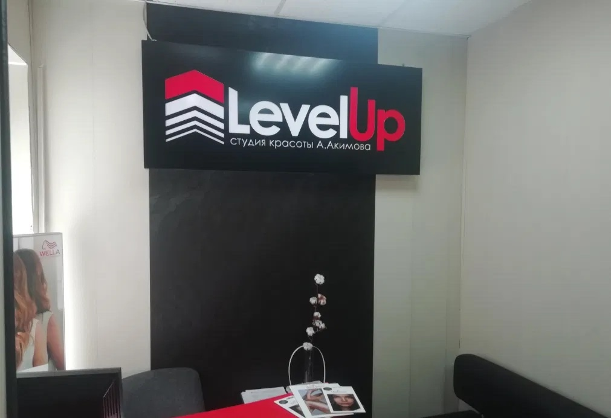
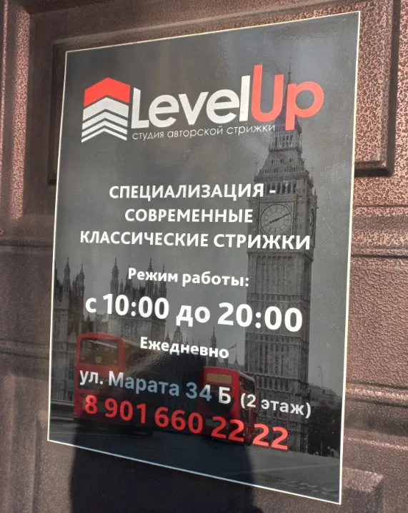

ИРКУТСК · МАРАТА, 34БКлассика. Характер. Вы.
Ваш стиль.
На уровень
выше.
Современные классические стрижки
в студии LevelUp.

01 / О СТУДИИ
Классика, которая
звучит по-новому.
LevelUp — студия авторской стрижки на улице Марата в Иркутске. Наша специализация — современные классические стрижки.
Освежить привычный образ или решиться на перемены? Начните с простого звонка. Обсудим ваш запрос и время визита.
02 / ВАШ ОБРАЗХорошая стрижка.
Хорошая стрижка.
В вашем стиле.
01
Современная классика
Знакомые формы в актуальном прочтении.
Основное направление нашей студии.
02
Авторский подход
Ваш образ начинается с ваших пожеланий.
Расскажите, какую стрижку вы хотите.
Уточните стоимость и детали стрижки по телефону.Обсудить стрижку ↗

03 / ЖДЁМ В ГОСТИБлиже,
Ближе,
чем кажется.↗
Мы на Марата, 34Б, на втором этаже.
Ищите вывеску LevelUp — вы на месте.
АДРЕСИркутск, ул. Марата, 34Б · 2 этаж
ВРЕМЯ ДЛЯ ВАШЕГО СТИЛЯЕжедневно, 10:00–20:00
Открыть в Яндекс Картах ↗04 / ЗАПИСЬ И КОНТАКТЫВремя для
Время для
вашего LevelUp.
Запись ведётся по телефону.
Выберите удобное время — позвоните нам.
Иркутск, ул. Марата, 34Б · 2 этажПостроить маршрут ↗